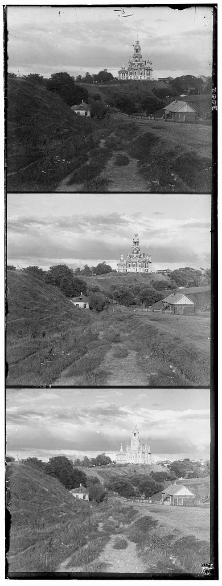
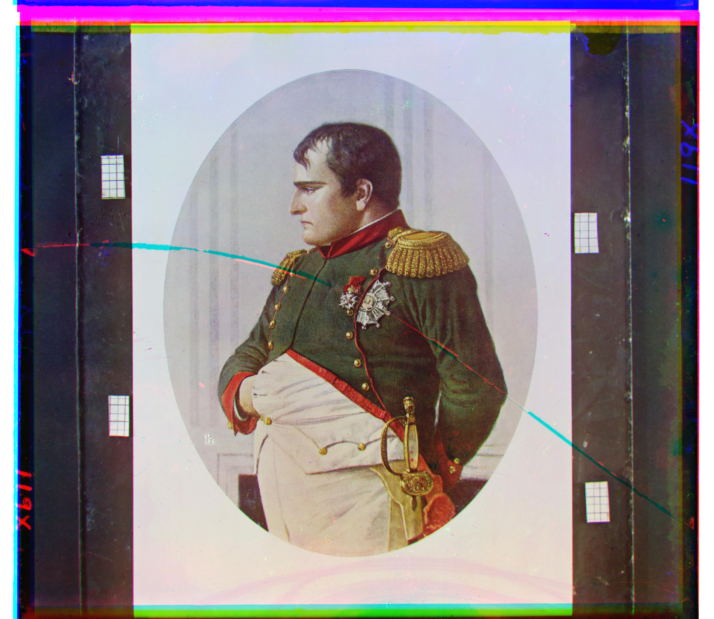
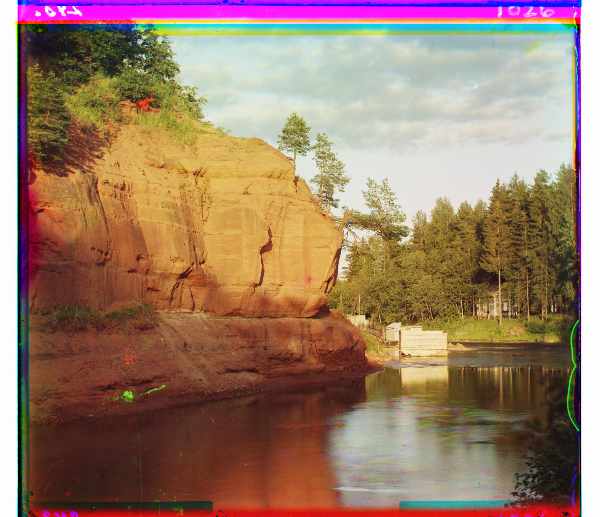
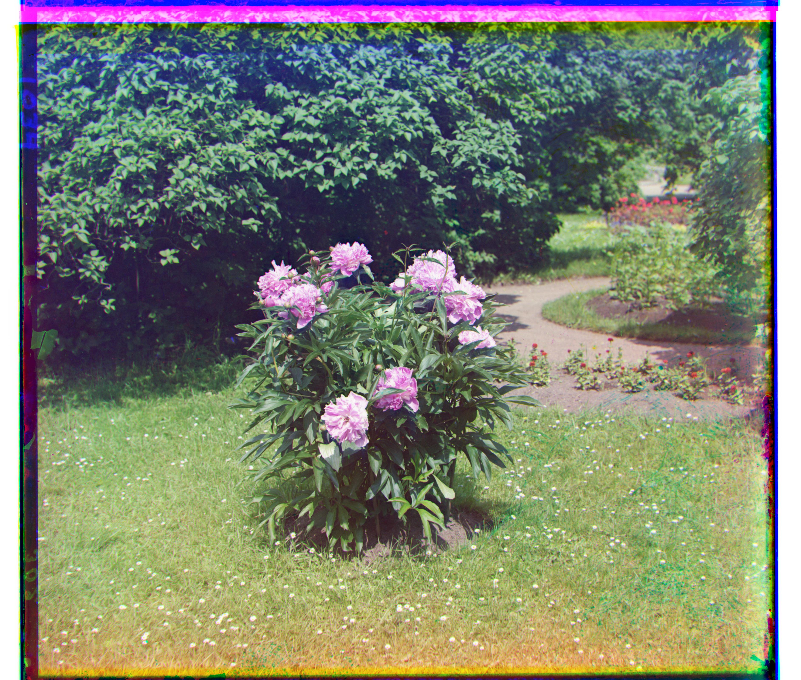
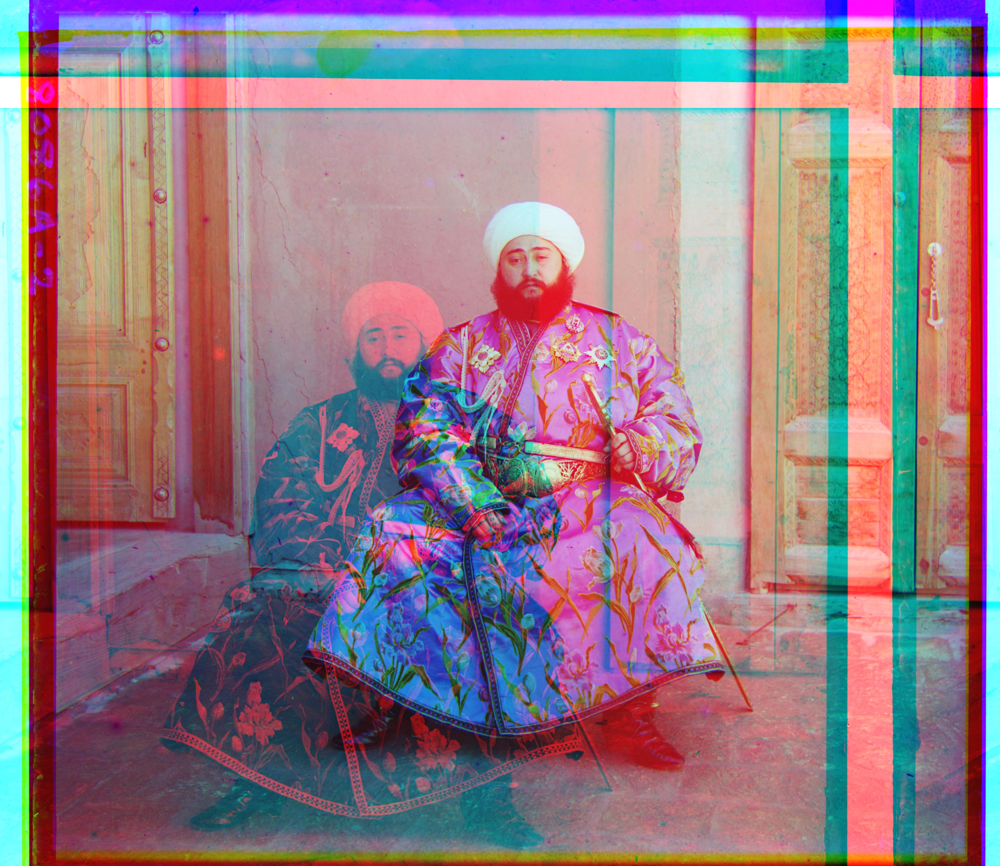

Colorizing the Prokudin-Gorskii Photo Collection
Aligning glass plate negatives into color images
Overview
In 1907, a series of photographs of the Russian empire were taken, by Sergey Prokudin-Gorsky. These were before color film became practical; his method was to shoot every single scene three times in very quick succession into three different-colored filters: red, green, and blue. He recorded them all onto one glass plate. However, since he never could print them himself, they ended up in the Library of Congress until later being digitized.
The core problem with these images is that you cannot simply stack them on top of each other to get the original image. The alignment is not perfect due to small perturbations in the camera, so all 3 channels were offset of each other from just a few pixels to hundreds of pixels. The goal of this project is to fine these offsets and optimally stack the channels into a single color image.


Approach
Splitting the plate
First, we split every single plate into three equal parts, in the order blue, green, and red. I then convert everything to floating-point pixel 2d-arrays.
Base alignment process
The most basic alignment process to use is a search over some range; we shift one of the
channels (red, green) over the blue channel by certain x-y offsets, and keep the offset
which has the best score. np.roll was a convenient function for this.
There are two core scoring functions that I tried: L2 norm and NCC. The L2 norm is very typical: you take the error between two corresponding pixels, square it, and sum this over the entire image. NCC (normalized cross-correlation) first subtracts the mean from every single image, normalizes the image to unit length (treat it like a vector here) and then takes their dot product (treat it like a vector here as well). NCC generally ignores the overall brightness (ignores magnitude) and instead looks at the actual “directional” discrepancy. I found using NCC to be an important choice for the later image pyramid alignments.
Issues with the borders
Another important detail in finding the alignment offsets was removing the borders from the images when scoring different alignment setups. As you can see in the plate earlier, the borders have a strip of film around the edge, which is very bright and overwhelms the photograph itself; it's additionally very variable across channels. The border will thus always be mismatched and ends up dominating the score, and the algorithm ends up just finding an alignment that minimizes error on the borders more so than the entire image.
I thus computed the metrics only on the center of the images (aka slicing off the border). I trimmed about 15% off of each side before scoring it (though, note that the full image is still getting shifted and saved; this is only for scoring). The alignment numbers seemed pretty insensitive to the exact amount that I trimmed ranging from 10 to 20%.

Coarse-to-fine pyramid
The type of “brute-force” search over all possible offsets in a range works well for small JPG files, where the offsets were generally under our search range (15 pixels). However, for the full-size plates, this strategy falls apart: the displacements can be in the scale of hundreds of pixels, and the channels are much higher resolution than the JPGs. Since our method searches a box over the range, it is quadratic in the range which makes this even harder.
This computational problem can be eased using image pyramids, which allow a much smaller search space. We first shrink every single channel in half (across both dimensions) repeatedly until it hits some floor (I chose 64 pixels on a side). We can then run a search over this smaller image, since the scale has been reduced by so much (a small search covers a large part of the image), find & choose the best alignment, and then upsample it appropriately into the original image. On each upsampling level, we run a tiny search of 2 pixels in every single direction to catch any upsampling error, since the offset we find at any level has to be a whole number of pixels, while the true offset at that scale usually isn't. Doubling a rounded estimate doubles its error along with it, and that compounds at every level on the way back up. The small search corrects the estimate before the error has a chance to grow.
For downsampling, it is possible to do just naive downsampling where you just take every second pixel across the dimensions, but I also applied a Gaussian blur to reduce aliasing, since I would imagine very fine detail would get erronously mixed together if you just did the naive method.
I also found it very important to use NCC over L2 here, for some reason. One guess that I have is that the downsampling process sort of blurs away more fine detail, and so a lot of what the L2 difference would capture would not actually be fine detailed differences, but instead difference in brightness across channels. NCC is designed to fix this issue by subtracting the mean and normalizing the image, so it tracks the difference in actual details / features more well than L2 could.
| Level | Image size | Step | Offset (x, y) |
|---|---|---|---|
| 1/4 | 86 × 98 | wide ±15 search | (1, 3) |
| 1/2 | 171 × 195 | double, then refine (0, 0) | (2, 6) |
| 1/1 | 341 × 390 | double, then refine (−1, 0) | (3, 12) |
Results: single-scale alignment
These three easier images can be solved with simple search, searching ±15 across both dimensions and finding the best NCC on the cropped part (inner 70%). Runtime is well under a second.


Results: multi-scale pyramid alignment
These results are on the full set of all 14 images, using the image pyramid method described earlier. The depth is adaptive to the image size; the algorithm will recurse until the size reaches some threshold. The runtime is around 4 seconds per image, which is well under the 1-minute quota per image.


Results: image pyramids on my own selection
I chose 3 more additional pictures from this same collection, from the Library of Congress: a painting, a river landscape, and flowers. I run this algorithm on these as well with no other adjustments.



Emir Image
The one plate that did not easily align with the algorithm that I discussed above was this picture of the Emir; all other images worked. Even after trying a variety of hyperparameters, it was off by a lot.
I suspect the reason might be that his robe is a particular shade of blue that is so vivid that it comes off as bright on a blue plate and dark on the red plate; thus, at perfect alignment, they would not share the maximum correlation / alignment score.

The fix I came up with was changing the channel that red was aligned with. It was easy to get green to align with the blue channel, as it's closer to blue in the spectrum than red is, and thus the green and blue channels look more similar than red and blue. So first, green is aligned with blue, and then red is aligned not with blue, but with the already-aligned green; this will ideally align the red with the blue.
Implementation notes
We used the same hyperparameters for alignment for every single image: we trimmed 15% off the border just for scoring, searched a 15x15 grid at the deepest pyramid level, refined 2 pixels in each direction during every upsample, and recursed downwards to around 64-pixel images.
The runtime was well under a minute; it was about 4 seconds per plate. The comparison is the most expensive part of the alignment, but this was well-reduced in the pyramid methods by making the processed image very small in comparison to the complete image.